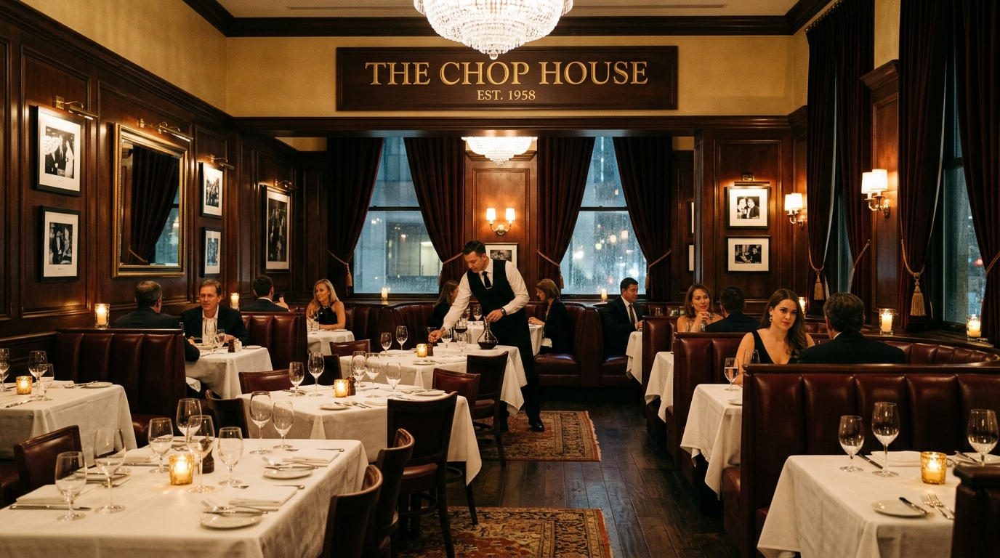
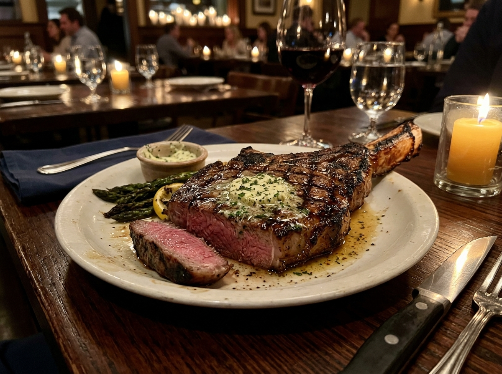

The Beef 'N Bottle Heritage
For over six decades, Beef 'N Bottle has stood as a bastion of classic American steakhouse hospitality on South Boulevard in Charlotte.
A Charlotte Landmark Since 1958
Founded in 1958, Beef 'N Bottle was built on simple, unyielding principles: source the highest quality beef, prepare each cut with precision, serve every guest with genuine warmth, and cultivate an intimate atmosphere where memories are made.
While Charlotte has grown into a bustling financial metropolis, Beef 'N Bottle has remained intentionally true to its roots. Our dark wood paneling, plush leather booths, low ambient lighting, and white-linen table service carry the quiet dignity of a bygone era.


Uncompromising Steakhouse Traditions
At Beef 'N Bottle, we believe great steak requires no gimmickry. Our kitchen selects top-tier grain-fed beef, hand-cutting prime cuts of Filet Mignon, Bone-In Kansas City Strip, T-Bone, and Ribeye daily.
Broiled under high heat to sear in natural juices, each steak is paired with traditional steakhouse sides — creamed spinach, jumbo baked potatoes, house-made onion rings, and fresh seafood selections.
Built on Decades of Hospitality
The Doors Open
Established on South Blvd as a dedicated steak and wine destination in Charlotte, rapidly becoming a favorite for business dining and special occasions.
Preserved Atmosphere
While modern trends come and go, Beef 'N Bottle intentionally preserved its intimate dark-paneled walls, low ambient lighting, and white-linen table service.
A Living Tradition
Today, third-generation guests dine in the same leather booths where their parents and grandparents celebrated life’s special milestones.